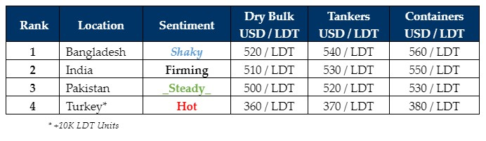

inWeekly Demolition Reports20/05/2024

Following on from last week’s unexpected shock via the intentional depreciation in the value of the Bangladeshi Taka,it has been an altogether quieter week of sales and activity in the country as domestic ship recyclers weigh in on the potential costs & implications of further depreciations, given that the Taka slipped further into BDT 117 territory against the U.S. Dollar this week. As Bangladesh’s outflow of foreign currency reserves increases once again, there remain growing concerns of further restrictions on an already limited number of L/C approvals in the country, in addition to a plate price that’s still in a coma, penalizing local Buyers by pushing the cost of recycling ships in Bangladesh, into increasingly costlier and clearly worrisome times.
Meanwhile, the recent and impressively renewed aggression to acquire the one-off unit that has been proposed for a recycling sale, has seen the Indian market display an impressive performance at the bidding tables of late, resulting in several interesting acquisitions by Alang Recyclers that have certainly captured the imagination – particularly on a collection of HKC only containers that have been committed into WC India so far this year. Further out West, despite there having been all of the positive / encouraging signs to continue on their recent trajectory, Pakistani struggles resume once again as the lack of motivation has seen Gadani Recyclers continually missed out on their ‘swipe’ at ongoing fixtures, given that sentiments and offer levels from Pakistan are failing to grab the attention of Ship Owners & Cash Buyers alike. On the far end, Turkey remains silently on fire, with nothing of note to report this week as well.
As global recycling economies endured a rare week of silent stability, the U.S. Dollar has left most ship recycling nation currencies on an even-to-firmer footing this week, while local steel plate prices in Pakistan / Bangladesh bunk together in the same coffin and Indian plate prices jumped again by about USD 5/Ton this week, further boosting Alang sentiments as the nation concludes its 4th week of voting in the upcoming General Election towards incumbent Minister Modi’s likely victory.
In terms of workable candidates, there seem to be a few more vessels in the market (mostly for an HKC resale) and we should hopefully see a few more deals concluded in the week(s) ahead. Moreover, the condition of supply is hopefully set to improve come early July as further hiccups in freight rates are expected and supply is set to increase towards the end of Q3 / early Q4.
For week 20 of 2024, GMS demo rankings / pricing for the week are as below.

📄 Download PDF: Ship-recycling-market-insight-Week-19-2024-Silent_Stability.pdfSource: GMS,Inc.https://www.gmsinc.net/gms_new/index.php/web